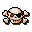

Seven Seas DeluxeDetails
 |
|
| Playtime | Not Played |
| Last Activity | Never |
| Added | 16-Dec-24 0:46:21 |
| Modified | 16-Dec-24 2:04:47 |
| Completion Status | Not Played |
| Library | Playnite |
| Source | |
| Platform | PC (Windows) |
| Release Date | 2001 |
| Community Score | 84 |
| Critic Score | 76 |
| User Score | |
| Genre | Puzzle Top-down |
| Developer | PopCap Games |
| Publisher | PopCap Games |
| Feature | |
| Links | MobyGames RAWG |
| Tag | |
Description
Seven Seas is a top-down strategical puzzle game with a pirate theme, set on an ocean board of 11x11 squares. Players control a white galleon and need to eliminate all pirate ships to complete a level. For each turn the ship can move in any of the eight squares surrounding the ship, unless blocked by an obstacle. Pirate ships have the same movement options and an identical speed of one square per turn. It is also possible not to move and fire the two broadside cannons to the left and the right of the ship instead, with a maximum reach of three squares.
Since the player's galleon is always outnumbered, the pirates can be tricked to move inside the line of fire. Black ships also blindly track the player's movement, meaning they can be lured to collide with island reefs or ship wrecks. Red ships are smarter and avoid obvious obstacles by moving around them. As a last resort the player's ship can also move into a whirlpool, which teleports the ship to a random location on the map. Players get points for each ship taken down and later levels introduce new opponents such as sea monsters. The player start with three lives. There are three main difficulty levels and a high score list.